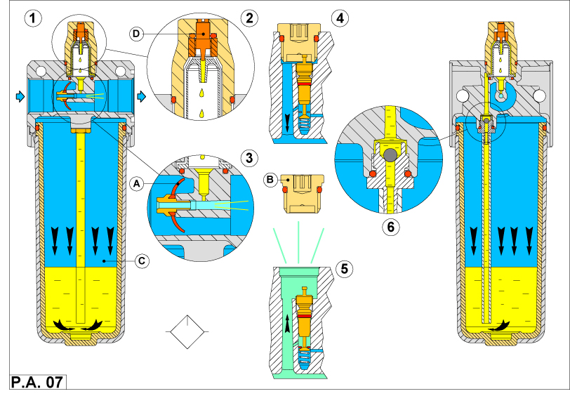

содержание
ПОДГОТОВКА СЖАТОГО ВОЗДУХА ДЛЯ ЗОНЫ ИСПОЛЬЗОВАНИЯ УСТРОЙСТВА СМАЗКИ
Смазка предотвращает повреждения, вызванные контактным трением между поверхностями при относительном
движении. Имеются и другие причины для введения смазки механического оборудования. Вот они: а) Уменьшение износа; б) Снижение эффектов трения;
в) Улучшение защиты против коррозии. В пневматических системах для подачи смазки (масла) к устройствам, требующим этого, используется
поток воздуха. Для подачи масла в воздушный поток применяют устройство, действующее по схеме "смазки масляным туманом". В его основе
лежит принцип "Вентури" и действует оно следующим способом.
Обратимся
Рис. 1. Маленький диск А оснащенный эластичной мембраной и снабженный пружиной, позволяет создавать эффект Вентури, обеспечивая также
изменения потока через узел. Поскольку воздух проходит через блок B, увеличение скорости создает небольшой вакуум в расположенной выше
трубке.
Рис. 2. Стакан С содержащий масло связан с входным отверстием воздуха (Рис. 4). Комбинированный эффект давления, работающего на
поверхности масла, вместе с вакуумом, произведенным эффектом Вентури, заставляет масло подниматься по трубке в смотровой стекляный
стаканчик.
Рис. 3. Регулирование маслянного потока обеспечивается, используя ввернутую в резьбовое отверстие иглу D. Количество смазки, подаваемой
в систему, определяется числом капель, которое должно регулироваться, чтобы соответствовать требованиям воздуха. Шарик E предотвращает возврат
масла в стакан, каждый раз, когда прекращается потребление воздуха. Небольшое количество смазки выше шарика в этом случае доступно
для непосредственного использования при возобновлении воздушного потока,
Рис. 4. Чтобы снова наполнить стакан смазкой в процессе использования, давление воздуха в нем может быть стравлено, при вывинчивании
заглушки выше клапана F. Удаление этой заглушки закрывает клапан входного отверстия и позволяет снова наполнить стакан через это
отверстие. В другом варианте стакан может быть удален для более удобного заполнения.
Работу лубрикатора
(устройства смазки)
и основных его функциональных узлов можно видеть в действии здесь.
Чтобы гарантировать сработывание эффекта Вентури, требуется минимальный воздушный поток через
устройство смазки, это минимальное значение обычно указывается в документации изготовителей.
НЕ все типы масел могут использоваться. Характеристики масел должны учитывать свойства распыления
их воздушным потоком и совместимость с материалом уплотнений клапана и цилиндра.
Рекомендуется масло с вязкостью между 3 и 5 градусами по шкале Энглера.
Максимальное расстояние, которое может быть обеспечено устройством смазки маслянным туманом,
приблизительно 8-10 метров.
Обычно рекомендуется применение металлических стаканов с внешними маслянными индикаторами уровня
по тем же соображениям, как и для фильтров.
ОБРАТИТЕ ВНИМАНИЕ: сжатый воздух, после использования в пневматическом оборудовании, сбрасывается
в атмосферу измененным по составу. Этот ухудшенный воздух также содержит частицы масел, которые могут наносить вред дыхательным
системам людей или загрязнять готовое изделие (это критично для предприятий пищевой промышленности, фармацевтических и электронных
отраслей).
Можно устранить большинство маслянных частиц из сбрасываемого после использования сжатого воздуха,
пропуская его через корректно спроектированный выходной фильтр.
Современная технология имеет тенденцию ограничивать использование масла, производя компоненты,
которые функционируют с воздухом без маслянной смазки.